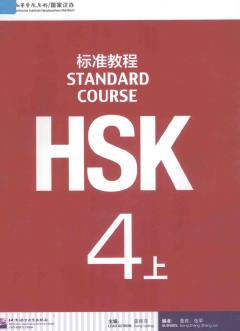

H4Xitoy tilidan HSK 4 darajasiga tayyorlanish uchun mo'ljallangan rasmiy o'quv qo'llanma.
Ushbu kitob xitoy tilini o'rganuvchilar uchun mo'ljallangan HSK 4 darajasidagi rasmiy o'quv qo'llanma hisoblanadi. Unda turli mavzulardagi matnlar, leksik va grammatik tushuntirishlar hamda amaliy mashqlar keltirilgan. Qo'llanma xitoy tilidan imtihonlarga tayyorgarlik ko'rish va til ko'nikmalarini oshirish uchun juda qo'l keladi.